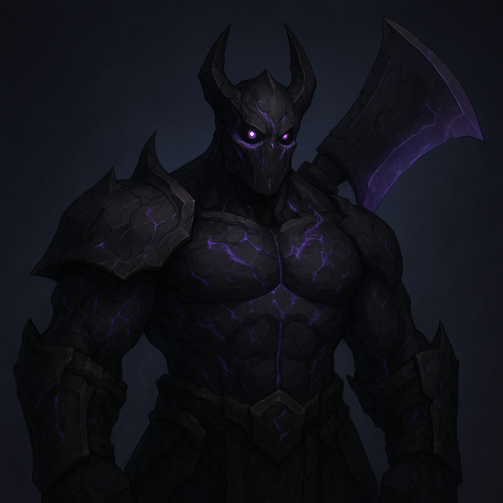

SUBJECT DESCRIPTION
Drazik Voidcleaver presents as a broad-shouldered humanoid of indeterminate origin, exhibiting dermal patterns consistent with prolonged exposure to corrupted dimensional energies. His skin carries a faint obsidian sheen interrupted by runic fissures that emit intermittent pulses of violet light, particularly during mana-dense atmospheric conditions. Ocular examination from long-range surveillance reveals irises resembling rotating planar rings, each orbiting around a fixed, pitch-black core—an indicator of advanced void attunement. Subject maintains a full set of heavy, scavenged armor comprised of hybrid metals, scrap plating, and void-infused alloys, heavily reinforced along the arms and spine. Of note is a massive, cleaver-like arcane weapon affixed to his back; readings confirm it functions as both a physical and energetic conduit, amplifying the subject’s ability to fracture environmental stability. Despite his bulk, field agents report that Drazik moves with alarming smoothness, his silhouette frequently “stuttering” or partially phasing, as though the subject exists one step out of alignment with local reality. Auditory distortions—low-frequency hums, momentary silence, or clipped echoes—are commonly recorded in his proximity, suggesting that Drazik’s void manipulation is active even at rest.
KNOWN ACTIVITIES
Drazik Voidcleaver has been repeatedly sighted within and around the Void Sepulture, where he harvests high-density void cores and dismantles remaining stabilizer pylons, accelerating regional corruption. Subject routinely disables surveillance constructs through localized spatial shearing, leaving no trace signatures behind. He has been linked to multiple mana-refinery drain events and appears moments before several recorded planar micro-ruptures, suggesting deliberate manipulation of faultlines. Following his breach of the Central Arcane Repository and theft of three containment-grade essence cubes, all energy trails tracked by long-range sensors terminated inside the deepest levels of the Void Sepulture, confirming it as his primary operational zone.
THREAT ASSESSMENT
Drazik Voidcleaver now qualifies as a Level 5 Critical Threat with escalating concern due to his entrenched presence within the Void Sepulture—an already unstable zone whose integrity is deteriorating faster under his influence. His ability to weaponize void currents, collapse localized mana structures, and traverse short-range rifts with precision makes interception effectively impossible. Environmental modeling indicates that continued disruption of the Sepulture’s anchor pylons could trigger a chain destabilization capable of breaching multiple planar layers, resulting in region-wide void seepage. Subject displays methodical intent rather than random aggression, suggesting a long-term objective that prioritizes power accumulation over collateral survival. Engagement remains prohibited. Any direct confrontation risks immediate spatial collapse or mass casualty events due to uncontrolled void surges. Continuous remote surveillance is mandatory, with contingency protocols advising full evacuation of adjacent zones should the subject’s activities intensify.
- Avoid all direct confrontation with Subject DV-3119.
- Establish continuous surveillance on known void-scarred regions.
- Deploy interdiction drones capable of long-range sensory capture only—no engagement modules.
- Report all anomalous void activity immediately to High Command.
- Prepare contingency protocols for potential multi-zone planar collapse.